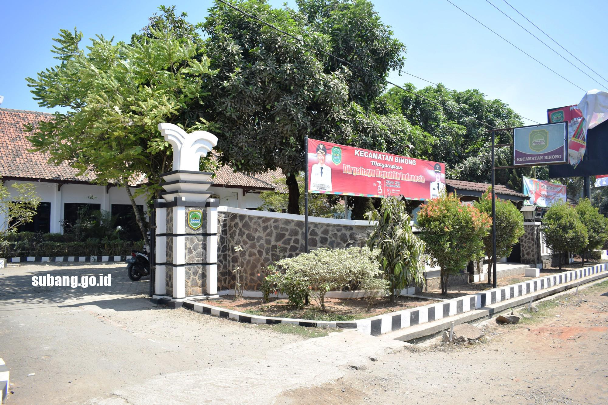

“Terwujudnya Kec.patokbesuis Kabupaten Subang yang Unggul, Maju dan Kompetitif, dalam Bingkai Karya Nyata Pembangunan Berkelanjutan, Menuju Masyarakat yang Adil Sejahtera, Demokratis dan Religius”
Visi dan misi tersebut menjadi pedoman bagi pemerintah Kecamatan Patokbeusi dalam melaksanakan program pembangunan dan pelayanan publik bagi masyarakat.
Dengan adanya visi dan misi yang jelas, diharapkan seluruh kegiatan pemerintahan dapat berjalan dengan baik dan memberikan manfaat nyata bagi masyarakat.
Pemerintah kecamatan juga terus menjalin kerja sama dengan berbagai pihak agar tujuan pembangunan daerah dapat tercapai secara optimal.
Partisipasi masyarakat sangat penting dalam mendukung keberhasilan program-program pemerintah demi kemajuan Kecamatan Patokbeusi.